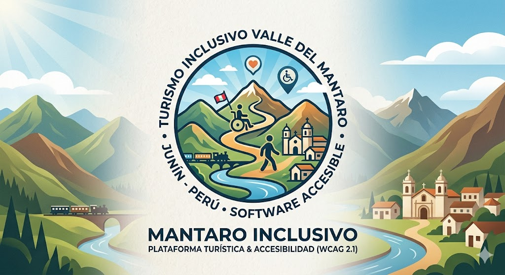

Personaliza las recomendaciones del mapa y asistente IA según tu discapacidad.
Ubícate y descubre rutas accesibles en el Valle del Mantaro. Selecciona un destino para trazar una ruta adaptada desde tu ubicación.
Museo y convento histórico con rampas certificadas.
Formaciones rocosas únicas, senderos adaptados para silla de ruedas.
Recorrido cultural con audioguías y pictogramas.